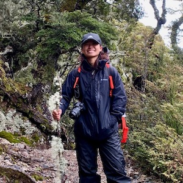

|  | Valerie KWANResearch Assistant
Email: valeriekwan(AT)nus.edu.sg |
Background
I am a Research Assistant at the Centre for Nature-based Climate Solutions. My research interests include blue carbon, tropical marine ecology, coastal management, marine biology and conservation. I completed my final year undergraduate project on the contribution of macroalgae to blue carbon along Singapore's coastal environment. Prior to that, I did a UROPS project on the diversity and phylogeny of Lobophora macroalgae in Singapore.
Current project
Blue carbon is a critical component of nature-based climate solutions, especially in Southeast Asia, where we have thriving coastal ecosystems such as mangroves, salt marshes, seagrass meadows and macroalgae. I use remote sensing, gas flux experiments and eDNA to fill the gaps in local and regional blue carbon knowledge and enable informed management decisions.
Academic history
Bachelor of Environmental Studies (Hons.), National University of Singapore (2021).